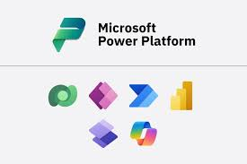

I am a dynamic IT professional with a strong focus on data analytics, process automation, and solution development. My project experience spans
multiple platforms and technologies, including Excel (Advanced), Tableau,MySQL ,Power BI, Microsoft Power Platform, Python, C# , C++ and Pandas.
Let us leverage the power of data and technology together.

Automated data analysis and workflow processes using libraries like Pandas and NumPy. Developed custom scripts for data cleaning, transformation, and visualization
Data cleaning, creating pivot tables, generating complex reports, and utilizing advanced functions such as VLOOKUP, INDEX-MATCH, and conditional formatting for data analysis.

Interactive dashboards and reports to visualize complex datasets. Proficient in data modeling, DAX functions, and integrating data from multiple sources to provide actionable insights.

Visually compelling dashboards for effective storytelling with data. Conducted trend analysis and KPI tracking to support strategic decision-making.

Creating, managing, and optimizing databases. Proficient in writing complex queries, stored procedures, and performing data normalization

Efficient algorithms and built performance-critical applications with strong knowledge of object-oriented programming principles and memory management.

Scalable and secure applications with .NET frameworks. Implemented REST APIs and integrated data storage solutions for seamless backend operations.

Low-code solutions using Power Apps, Power Automate, and Power BI to streamline business processes and improve decision-making. Automated workflows, integrated data sources, and built intuitive applications to enhance productivity and user experience.